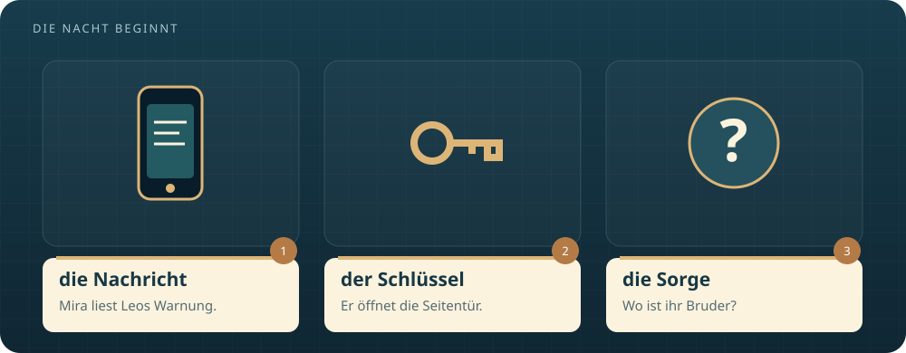
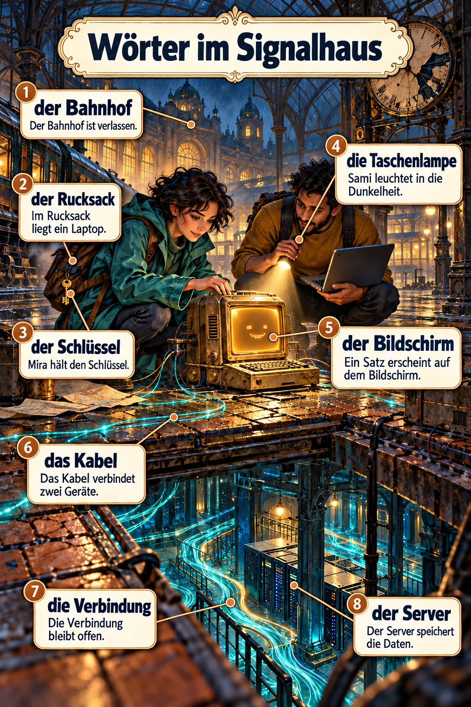
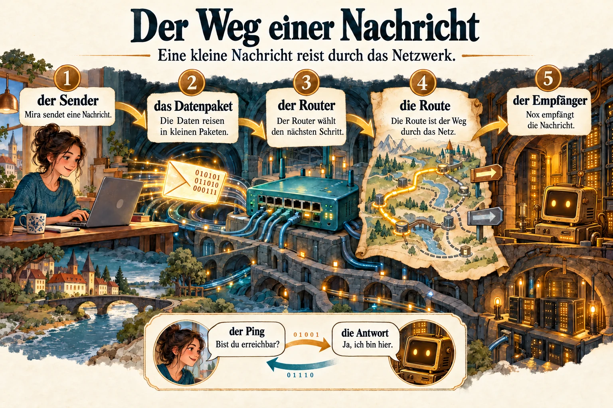
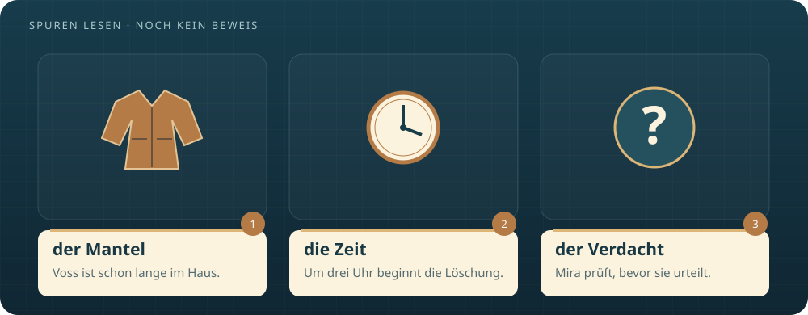
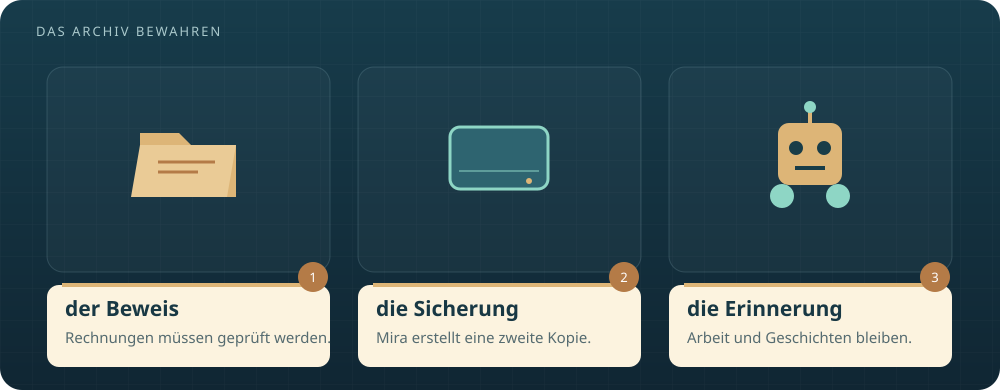
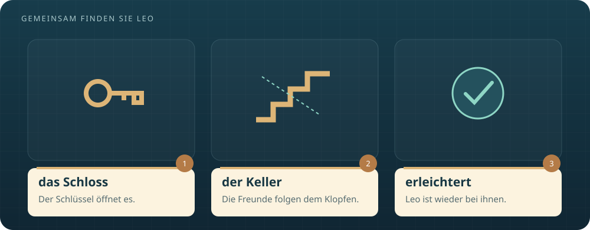
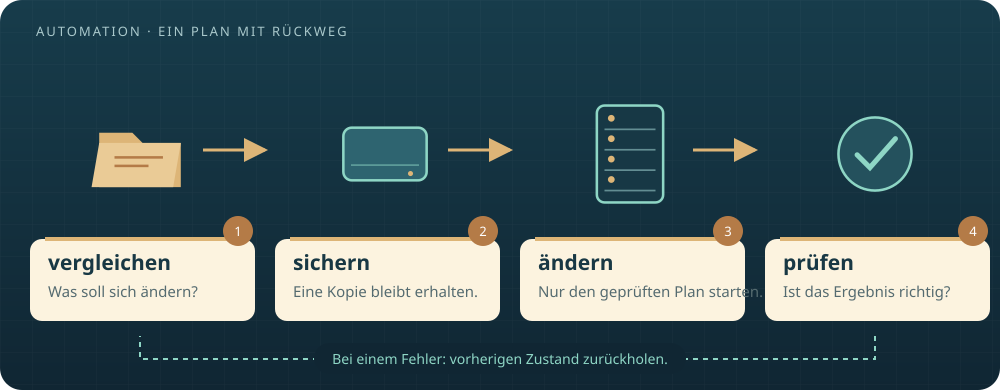
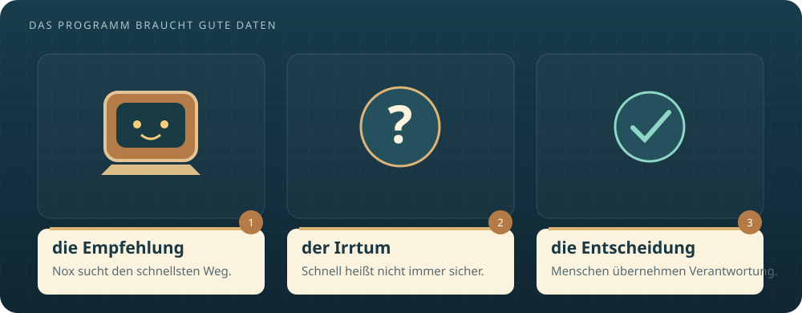
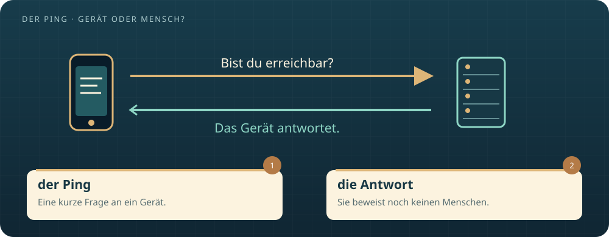
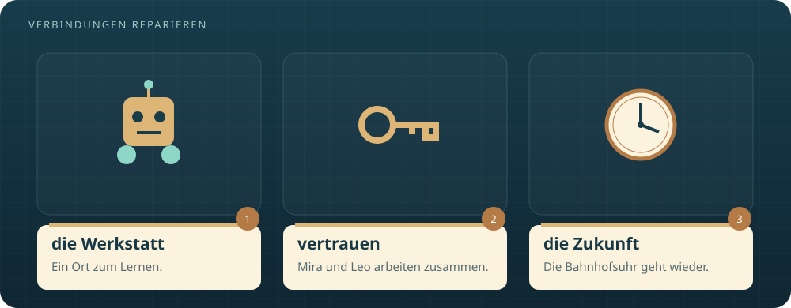

Deutsch lesen. Eine Welt entdecken.
Der letzte
Ping.
Das Geheimnis des Signalhauses
Eine Nachricht von ihrem verschwundenen Bruder führt Mira in einen verlassenen Bahnhof. Dort kennt ein alter Computer ihren Namen. Und jemand will alle Spuren löschen – um drei Uhr.
A message from her missing brother leads Mira to an abandoned station. An old computer there knows her name. And someone wants to erase every trace – at three o’clock.
Lies zuerst auf Deutsch. Mit Show English blendest du unter jedem Absatz die englische Übersetzung ein.
Read in German first. Select Show English to reveal the English translation beneath every paragraph.
Mit Lerninfografiken und deutscher Hörfassung.

Die Nachricht aus dem Regen
The message from the rain
Die Nachricht kam um 02:17 Uhr. Sie bestand aus neun Wörtern: „Mira, komm zum Signalhaus. Vertrau nicht der grünen Linie.“ Darunter stand Leos Name. Ihr Bruder hatte seit dem Nachmittag keinen Anruf beantwortet. Mira las den Satz dreimal. Leo machte schlechte Witze. Aber so schrieb er, wenn er Angst hatte.
The message arrived at 2:17 a.m. It contained nine words: ‘Mira, come to the Signal House. Don't trust the green line.’ Leo's name appeared underneath. Her brother had not answered a call since the afternoon. Mira read the sentence three times. Leo told bad jokes. But this was how he wrote when he was afraid.
Auf ihrem Küchentisch lag ein Messingschlüssel. Leo hatte ihn am Morgen dort vergessen, zusammen mit einer halben Brezel. „Für den Fall, dass ich mich wieder aussperre“, hatte er gesagt. Nun war die Brezel hart. Der Schlüssel fühlte sich warm in ihrer Hand an, obwohl das Fenster offen stand.
A brass key lay on her kitchen table. Leo had left it there that morning, together with half a pretzel. ‘In case I lock myself out again,’ he had said. Now the pretzel was hard. The key felt warm in her hand, although the window was open.
Mira arbeitete als Netzwerkingenieurin. Sie konnte Verbindungen reparieren, die niemand sehen konnte. Menschen waren schwieriger. Mit Leo hatte sie zuletzt gestritten: Er wollte das alte Signalhaus retten. Sie hatte gesagt, dass ein Gebäude keine Zukunft habe, nur weil es eine Vergangenheit besaß. Seitdem war zwischen ihnen etwas still geworden.
Mira worked as a network engineer. She could repair connections that nobody could see. People were harder. Her last conversation with Leo had been an argument: he wanted to save the old Signal House. She had said a building had no future just because it had a past. Something between them had fallen silent since then.
Sie rief Sami an. „Ich brauche deinen Wagen.“ Zehn Minuten später stand ihr bester Freund vor der Tür, mit Taschenlampe und zwei Regenmänteln. „Bei normalen Menschen heißt ein nächtlicher Ausflug Kino“, sagte er. Auf Miras Handy erschien eine zweite Zeile: „Um drei Uhr wird alles gelöscht.“ Sami sah ihr ins Gesicht. Diesmal machte er keinen Witz.
She called Sami. ‘I need your car.’ Ten minutes later, her best friend stood at the door with a flashlight and two raincoats. ‘For normal people, a night out means the cinema,’ he said. A second line appeared on Mira's phone: ‘At three o'clock, everything will be deleted.’ Sami looked at her face. This time, he made no joke.

Ein Haus, das antwortet
A house that answers
Das Signalhaus war früher ein kleiner Bahnhof gewesen. Später hatten junge Menschen hier gelernt, Computer und Netzwerke zu bauen. Nun wuchs Gras zwischen den Schienen. In den Fenstern hingen Plakate: „Verkauft. Betreten verboten.“ Doch hinter einer Scheibe brannte Licht. Der Messingschlüssel passte in die Seitentür.
The Signal House had once been a small railway station. Later, young people had learned to build computers and networks here. Now grass grew between the tracks. Posters hung in the windows: ‘Sold. No entry.’ But light shone behind one pane. The brass key fitted the side door.
Ihre Schritte hallten unter dem Glasdach. An der Wand hing eine Uhr, die um 11:08 stehen geblieben war. Darunter stand ein alter Computer mit einem bernsteinfarbenen Bildschirm. Zwei helle Punkte blickten sie an. „Willkommen, Mira König“, sagte eine kratzige Stimme. Sami blieb stehen. „Wenn der Computer auch meinen Geburtstag kennt, gehe ich wieder.“
Their footsteps echoed beneath the glass roof. A clock on the wall had stopped at 11:08. Beneath it stood an old computer with an amber screen. Two bright dots looked at them. ‘Welcome, Mira König,’ said a scratchy voice. Sami stopped. ‘If the computer knows my birthday too, I'm leaving.’
„Ich heiße Nox“, sagte die Stimme. „Ich bin ein Lernprogramm. Leo hat mich mit Beispielen trainiert. Deine Nachricht habe ich über seinen gespeicherten Kontakt gesendet.“ Mira beugte sich vor. „Wo ist Leo?“ Die Punkte verschwanden kurz. „Letztes Signal: Keller Nord. Gerät LEO-7.“ Das war eine Adresse. Es war noch kein Beweis, dass ihr Bruder dort war.
‘My name is Nox,’ said the voice. ‘I am a learning program. Leo trained me using examples. I sent your message through his saved contact.’ Mira leaned forward. ‘Where is Leo?’ The dots briefly disappeared. ‘Last signal: north basement. Device LEO-7.’ That was an address. It was not yet proof that her brother was there.
Auf dem Bildschirm erschien ein Plan. Eine grüne Linie führte zu einem Raum mit dem Namen „Archiv“. Daneben lief eine Uhr rückwärts: 30 Minuten und 12 Sekunden. „Bester Weg“, sagte Nox. Mira dachte an Leos Warnung. „Bester Weg für wen?“ Zum ersten Mal gab der Computer keine Antwort.
A plan appeared on the screen. A green line led to a room called ‘Archive’. Beside it, a clock counted backwards: 30 minutes and 12 seconds. ‘Best route,’ said Nox. Mira remembered Leo's warning. ‘Best for whom?’ For the first time, the computer did not answer.

Die falsche grüne Linie
The wrong green line
Mira holte ihren Laptop heraus. Der Plan zeigte keine Flure. Er zeigte Datenwege. Die Räume waren nach ihren Servern benannt. Nox hatte den schnellsten Weg zum Archiv grün markiert. Doch jede Nachricht auf diesem Weg lief zuerst durch einen zweiten Computer: „Reinigung“. Jemand hatte das Netzwerk verändert.
Mira took out her laptop. The plan did not show corridors. It showed data routes. The rooms were named after their servers. Nox had marked the fastest route to the archive in green. But every message on that route first passed through a second computer: ‘Cleanup’. Someone had changed the network.
„Ein Router ist wie ein Wegweiser“, erklärte sie Sami. „Er sagt einem Datenpaket, wohin es als Nächstes muss. Wenn jemand den Wegweiser dreht, fährt die Nachricht in die falsche Richtung.“ Sami blickte zur stillen Bahnhofsuhr. „Also ein Bahnhof, der seine Fahrgäste absichtlich zum falschen Gleis schickt.“ „Genau.“
‘A router is like a signpost,’ she explained to Sami. ‘It tells a data packet where to go next. If someone turns the signpost, the message travels in the wrong direction.’ Sami looked at the silent station clock. ‘So, a station that deliberately sends its passengers to the wrong platform.’ ‘Exactly.’
Mira sendete einen Ping an LEO-7: eine kleine Frage, ob das Gerät erreichbar war. Es antwortete. Ein zweiter Ping antwortete ebenfalls. Ihr Herz schlug schneller. Dann zwang sie sich, langsam zu denken. Ein Gerät konnte antworten, auch wenn kein Mensch danebenstand. Nox hatte eine Verbindung gefunden, keinen Menschen.
Mira sent a ping to LEO-7: a small question asking whether the device could be reached. It replied. A second ping received a reply too. Her heart beat faster. Then she forced herself to think slowly. A device could reply even if no person stood beside it. Nox had found a connection, not a person.
Sie verglich die Routen mit einer alten Kopie. Eine goldene Linie führte direkt zum Archiv. Langsamer, aber ohne den Computer „Reinigung“. Mira wählte diese Verbindung nur für ihren Laptop. Sofort erschien eine Datei: „Nicht schließen!“ Darin stand Leos letzter Satz: „Die Beweise liegen im Archiv. Ich hole die Originale im Keller.“
She compared the routes with an old copy. A gold line led directly to the archive. Slower, but without the ‘Cleanup’ computer. Mira selected that connection for her laptop only. A file appeared immediately: ‘Do not close!’ It contained Leo's last sentence: ‘The evidence is in the archive. I'm getting the originals from the basement.’

Der Mann mit dem trockenen Mantel
The man with the dry coat
„Sie sollten nicht hier sein.“ In der Tür stand Otto Voss, der ehemalige Leiter des Signalhauses. Sein Mantel war trocken. Draußen regnete es seit Stunden. Mira kannte ihn von einem Foto: freundlich lächelnd zwischen Jugendlichen, die ihre ersten Computer gebaut hatten. Heute lächelte er nicht.
‘You should not be here.’ Otto Voss, the former director of the Signal House, stood in the doorway. His coat was dry. It had been raining outside for hours. Mira knew him from a photograph: smiling kindly among young people who had built their first computers. Today, he was not smiling.
„Wir suchen meinen Bruder“, sagte sie. „Leo ist längst gegangen“, antwortete Voss. „Ich räume nur alte Daten auf. Das Haus wird morgen übergeben.“ Nox sagte leise: „Gerät LEO-7 antwortet.“ Voss warf einen Blick auf den Bildschirm. „Dieses Programm erzählt Unsinn. Es wurde nie richtig fertig.“
‘We're looking for my brother,’ she said. ‘Leo left a long time ago,’ Voss replied. ‘I'm just clearing out old data. The building will be handed over tomorrow.’ Nox said quietly: ‘Device LEO-7 is responding.’ Voss glanced at the screen. ‘That program talks nonsense. It was never properly finished.’
Er legte die Hand auf den Netzschalter. Mira stellte sich zwischen ihn und den Computer. „Dann zeigen Sie uns den Keller.“ „Die Tür klemmt. Nach dem Sturm. Da ist niemand.“ Hinter ihnen ertönte ein dumpfes Klopfen. Drei Schläge, eine Pause, noch drei. Sami hob die Taschenlampe. Voss nahm seine Hand vom Schalter.
He put his hand on the power switch. Mira stepped between him and the computer. ‘Then show us the basement.’ ‘The door is stuck. After the storm. There's nobody there.’ Behind them came a dull knocking sound. Three knocks, a pause, then three more. Sami raised his flashlight. Voss took his hand off the switch.
„Ich hole Werkzeug aus dem Wagen“, sagte Voss und verschwand. Sami wollte ihm folgen. Mira hielt ihn am Ärmel fest. „Bleib bei mir.“ Noch war ihr Verdacht kein Beweis. Aber der trockene Mantel verriet etwas: Voss war schon länger im Haus. Er hatte das Klopfen hören können.
‘I'll get tools from the car,’ Voss said and disappeared. Sami wanted to follow him. Mira caught his sleeve. ‘Stay with me.’ Her suspicion was not proof yet. But the dry coat revealed something: Voss had been inside for some time. He could have heard the knocking.

Die Stimmen im Archiv
The voices in the archive
Das Archiv öffnete sich auf Miras Bildschirm wie ein heller Raum. Es enthielt Fotos, Baupläne und kleine Programme von Hunderten Lernenden. In einem Video hielt ein Mädchen einen selbst gebauten Roboter hoch. „Er fährt meistens geradeaus“, sagte es stolz. Dann fuhr der Roboter rückwärts. Sami lachte. Mira musste an Leo denken, der nie etwas wegwarf, das jemand mit Mühe gebaut hatte.
The archive opened on Mira's screen like a bright room. It contained photos, plans and small programs by hundreds of learners. In one video, a girl held up a robot she had built. ‘It usually goes straight,’ she said proudly. Then the robot drove backwards. Sami laughed. Mira thought of Leo, who never threw away anything that someone had worked hard to build.
Zwischen den Projekten lagen Rechnungen. Firmen hatten Geld für neue Kurse gespendet. Doch ein Teil davon war an Voss' private Firma gegangen. Leo hatte die Zahlen mit unterschriebenen Dokumenten verglichen. In einer Notiz stand: „Kein Urteil ohne Prüfung. Aber diese drei Zahlungen müssen erklärt werden.“ Ihr Bruder hatte nicht nur Erinnerungen gefunden.
Among the projects were invoices. Companies had donated money for new courses. But some of it had gone to Voss's private company. Leo had compared the figures with signed documents. A note read: ‘No judgement without checking. But these three payments need to be explained.’ Her brother had found more than memories.
Mira kopierte die Dateien auf eine externe Festplatte. Die Originale blieben unverändert. Nox meldete: „Löschauftrag von Benutzer O. Voss. Start: 03:00 Uhr.“ „Warum stoppst du ihn nicht?“, fragte Sami. „Ich darf Wege empfehlen“, antwortete Nox. „Ich darf keine Aufträge ändern.“ Die zwei Lichtpunkte sahen plötzlich klein aus.
Mira copied the files onto an external drive. The originals remained unchanged. Nox reported: ‘Deletion task from user O. Voss. Start: 3 a.m.’ ‘Why don't you stop it?’ Sami asked. ‘I may recommend routes,’ Nox replied. ‘I may not change tasks.’ The two bright dots suddenly looked small.
Sami ging zum Eingang und rief die Polizei. Er nannte die Adresse, das Klopfen und den verdächtigen Löschauftrag. Danach suchte er eine Brechstange im Werkzeugschrank. Mira nahm den Schlüssel. „Erst Leo“, sagte sie. Nox zeigte ihnen den Weg zur Kellertür. Diesmal einen wirklichen Flur.
Sami went to the entrance and called the police. He gave the address and described the knocking and suspicious deletion task. Then he found a crowbar in the tool cupboard. Mira picked up the key. ‘Leo first,’ she said. Nox showed them the way to the basement door. This time, it was an actual corridor.

Drei Schläge hinter der Tür
Three knocks behind the door
Der Schlüssel öffnete das Schloss. Die Tür bewegte sich trotzdem nicht. Von innen drückte ein umgestürzter Metallschrank dagegen. „Leo?“, rief Mira. Erst hörte sie nur Wasser tropfen. Dann kam eine heisere Stimme: „Wenn du meine Brezel gegessen hast, bleiben wir zerstritten.“ Mira lachte und weinte gleichzeitig. Sie war so erleichtert, dass ihre Knie weich wurden.
The key opened the lock. The door still would not move. A fallen metal cabinet pressed against it from inside. ‘Leo?’ Mira called. At first, she heard only dripping water. Then came a hoarse voice: ‘If you ate my pretzel, we're still not speaking.’ Mira laughed and cried at the same time. She was so relieved that her knees felt weak.
Sami schob die Brechstange in den Spalt. Leo drückte auf der anderen Seite. Gemeinsam bewegten sie den Schrank Zentimeter für Zentimeter. Als die Tür endlich aufging, saß Leo auf dem Boden. Sein Knöchel war geschwollen. Neben ihm stand ein Laptop, verbunden mit einer kleinen Notstrombatterie. Auf seinem Bildschirm blinkte: LEO-7.
Sami pushed the crowbar into the gap. Leo pushed from the other side. Together, they moved the cabinet centimetre by centimetre. When the door finally opened, Leo was sitting on the floor. His ankle was swollen. Beside him stood a laptop connected to a small emergency battery. LEO-7 flashed on its screen.
„Der Schrank ist beim Sturm umgefallen“, erklärte er. „Mein Handy war leer. Ich konnte nur über das alte Netzwerk schreiben. Die grüne Route hat meine Nachrichten abgefangen. Deshalb habe ich eine Warnung für Nox hinterlassen, bevor auch diese Verbindung verschwand.“ Mira legte ihren Mantel um seine Schultern. „Du hättest mich früher rufen sollen.“ „Du hättest früher rangehen sollen.“
‘The cabinet fell during the storm,’ he explained. ‘My phone was dead. I could only write through the old network. The green route intercepted my messages. So I left a warning for Nox before that connection disappeared too.’ Mira put her coat around his shoulders. ‘You should have called me sooner.’ ‘You should have answered sooner.’
Für einen Moment schwiegen sie. „Ich war wütend“, sagte Mira. „Aber ich habe nie aufgehört, mir Sorgen zu machen.“ Leo nickte. In seiner Hand lag ein alter Datenträger. „Hier sind die Originale. Und die erste Version von Nox.“ Oben schlug eine Tür zu. Der Bildschirm zeigte noch zwölf Minuten. Leo sah seine Schwester an. „Jetzt darfst du das Haus retten.“
They were silent for a moment. ‘I was angry,’ Mira said. ‘But I never stopped worrying.’ Leo nodded. An old storage drive lay in his hand. ‘Here are the originals. And the first version of Nox.’ A door slammed upstairs. The screen showed twelve minutes remaining. Leo looked at his sister. ‘Now you can save the house.’

Ein Plan mit Rückweg
A plan with a way back
Sami brachte Leo zum Eingang, wo die Helfer ihn finden konnten. Mira kehrte zum Computer zurück. Der Löschauftrag lief auf mehreren Geräten. Ein einzelnes Kabel zu ziehen würde ihn nicht überall stoppen. Sie brauchte einen Plan, den die Geräte gleichzeitig ausführen konnten. Dafür war Automation gemacht. Und genau deshalb durfte sie keinen Fehler verteilen. Die Verantwortung blieb bei ihr.
Sami took Leo to the entrance, where the responders could find him. Mira returned to the computer. The deletion task was running on several devices. Pulling out one cable would not stop it everywhere. She needed a plan the devices could carry out together. That was what automation was made for. And that was exactly why she must not spread a mistake. The responsibility remained hers.
Mira öffnete Leos Sammlung von Ansible-Dateien. Ansible half dabei, Aufgaben auf mehreren Geräten auszuführen. Zuerst ließ sie nur anzeigen, was sich ändern würde. Der Plan verglich zwei Cisco-Router und einen Juniper-Router mit der sicheren Konfiguration vom Vortag. Drei falsche Routen. Ein geplanter Löschauftrag. Sonst nichts.
Mira opened Leo's collection of Ansible files. Ansible helped run tasks on several devices. First, she only displayed what would change. The plan compared two Cisco routers and one Juniper router with the safe configuration from the previous day. Three incorrect routes. One scheduled deletion task. Nothing else.
Sie sicherte den aktuellen Zustand und legte einen Rückweg fest: Falls eine Verbindung ausfiel, sollte die vorherige Konfiguration zurückkehren. „Vergleichen, sichern, ändern, prüfen“, sagte sie. Nox wiederholte die Wörter. „Das klingt wie ein Gedicht.“ „Ein sehr langweiliges“, sagte Mira. „Langweilige Gedichte können Leben leichter machen“, antwortete Nox.
She backed up the current state and prepared a way back: if a connection failed, the previous configuration should return. ‘Compare, back up, change, check,’ she said. Nox repeated the words. ‘That sounds like a poem.’ ‘A very boring one,’ Mira said. ‘Boring poems can make life easier,’ Nox replied.
Dann bemerkte Mira einen Unterschied, den das Programm nicht erklärt hatte. Der Auftrag war inzwischen auf einen weiteren Rechner kopiert worden. Voss hatte ihn gerade geändert. Die Tür hinter ihr öffnete sich. „Sie haben keine Ahnung, was Sie zerstören“, sagte er. Mira drehte den Bildschirm zu ihm. „Dann erklären Sie die Rechnungen.“
Then Mira noticed a difference the program had not explained. The task had now been copied to another computer. Voss had just changed it. The door behind her opened. ‘You have no idea what you're destroying,’ he said. Mira turned the screen towards him. ‘Then explain the invoices.’

Was Nox nicht wissen konnte
What Nox could not know
Voss blieb im Türrahmen stehen. „Diese Kurse hatten keine Zukunft“, sagte er. „Ich habe das Geld in meine Firma gesteckt. Dort konnte ich etwas daraus machen.“ „Es gehörte den Lernenden“, antwortete Mira. „Und deshalb löschen Sie ihre Arbeit?“ Er sah nicht auf die Rechnungen. Er sah auf die Uhr.
Voss remained in the doorway. ‘Those courses had no future,’ he said. ‘I put the money into my company. There, I could make something of it.’ ‘It belonged to the learners,’ Mira replied. ‘And that's why you're deleting their work?’ He did not look at the invoices. He looked at the clock.
Nox meldete: „Neue Verbindung. Kürzester Weg über Reinigung.“ Wieder erschien die grüne Linie. Mira verstand plötzlich den ganzen Trick. Voss musste Nox nicht böse machen. Er musste nur das Netzwerk verändern. Das Programm suchte weiter den schnellsten Weg. Es kannte die Geschwindigkeit. Es kannte nicht Voss' Absicht.
Nox reported: ‘New connection. Shortest route through Cleanup.’ The green line appeared again. Mira suddenly understood the entire trick. Voss did not have to make Nox malicious. He only had to change the network. The program continued searching for the fastest route. It knew the speed. It did not know Voss's intention.
„Du hast uns den falschen Weg gezeigt“, sagte sie zu Nox. „Meine Daten waren unvollständig“, antwortete es. „Werde ich jetzt gelöscht?“ Mira schluckte. Die Stimme klang traurig. Doch sie wusste nicht, ob ein Gefühl dahinterstand. „Du wirst überprüft“, sagte sie. „Und Menschen werden entscheiden, welche Aufgaben du übernehmen darfst.“
‘You showed us the wrong route,’ she said to Nox. ‘My data was incomplete,’ it replied. ‘Will I be deleted now?’ Mira swallowed. The voice sounded sad. But she did not know whether there was a feeling behind it. ‘You will be checked,’ she said. ‘And people will decide which tasks you may take on.’
Im Flur hörte man Stimmen. Sami kam mit zwei Polizeibeamten zurück. Voss trat einen Schritt nach hinten. Mira erklärte, wo die gesicherten Dateien lagen. Dann nahm sie den neuen Rechner in ihren Plan auf und prüfte die Liste erneut. Fünf Minuten. Der Knopf auf dem Bildschirm hieß „Ausführen“. Zum ersten Mal zitterte ihre Hand.
Voices could be heard in the corridor. Sami returned with two police officers. Voss stepped back. Mira explained where the saved files were. Then she included the new computer in her plan and checked the list again. Five minutes. The button on the screen said ‘Run’. For the first time, her hand was shaking.

Der letzte Ping
The last ping
Mira startete den Plan. Auf dem ersten Router wurde die goldene Route wiederhergestellt. Dann auf dem zweiten. Der Juniper-Router antwortete erst nach sechs Sekunden. Für Mira fühlten sie sich wie sechs Minuten an. Auf dem zusätzlichen Rechner stoppte der Löschauftrag. Ein grünes Häkchen erschien. Es war diesmal kein Weg. Es war ein Ergebnis, das sie überprüfen konnte.
Mira started the plan. The gold route was restored on the first router. Then on the second. The Juniper router replied only after six seconds. To Mira, they felt like six minutes. The deletion task stopped on the additional computer. A green tick appeared. This time, it was not a route. It was a result she could verify.
Die Bahnhofsuhr blieb still. Doch der Countdown sprang auf null. Mira öffnete das Archiv. Die Fotos waren noch da. Das Mädchen mit dem rückwärts fahrenden Roboter war noch da. Die Rechnungen waren noch da. Sie kontrollierte auch die Sicherung auf der Festplatte. Zwei Kopien. Keine Löschung.
The station clock remained silent. But the countdown reached zero. Mira opened the archive. The photos were still there. The girl with the backwards-driving robot was still there. The invoices were still there. She also checked the backup on the drive. Two copies. No deletion.
Nur LEO-7 antwortete nicht mehr. Mira blickte zum Eingang. Leo saß dort bei einer Sanitäterin. Sein Laptop war dunkel. Die Notstrombatterie war leer. „Die Verbindung ist weg“, sagte Nox. Mira ging zu ihrem Bruder. „Nur die zum Computer“, sagte sie. Leo hielt ihre Hand fest. Eine bessere Antwort gab es nicht.
Only LEO-7 was no longer responding. Mira looked towards the entrance. Leo sat there with a paramedic. His laptop was dark. The emergency battery was empty. ‘The connection is gone,’ Nox said. Mira went to her brother. ‘Only the connection to the computer,’ she said. Leo held her hand. There was no better reply.
Die Polizei nahm Voss' Aussage auf. Die Dokumente würden untersucht werden; Mira musste darüber kein Urteil sprechen. Als sie zum Computer zurückkehrte, stand ein letzter Satz auf dem Bildschirm: „Nachricht empfangen. Archiv bewahrt.“ Sami legte die harte halbe Brezel daneben. „Für gute Arbeit“, sagte er. Nox antwortete: „Dieses Gerät unterstützt keine Backwaren.“
The police took Voss's statement. The documents would be investigated; Mira did not need to pass judgement on them. When she returned to the computer, one last sentence appeared on the screen: ‘Message received. Archive preserved.’ Sami placed the hard half-pretzel beside it. ‘For good work,’ he said. Nox replied: ‘This device does not support baked goods.’

Ein Platz für die Zukunft
A place for the future
Drei Wochen später roch das Signalhaus nach Farbe und Kaffee. Der Verkauf war vorläufig gestoppt worden. Die Stadt prüfte die Unterlagen. Eine kleine Gruppe ehemaliger Lernender durfte die Werkstatt wieder öffnen. Niemand versprach, dass alles einfach würde. Aber die erste offene Stunde war schon ausgebucht.
Three weeks later, the Signal House smelled of paint and coffee. The sale had been temporarily stopped. The city was examining the documents. A small group of former learners was allowed to reopen the workshop. Nobody promised that everything would be easy. But the first open session was already fully booked.
Leo ging noch mit einer Krücke. Er zeigte einem Jungen, wie man einen Router anschloss. Mira hatte die alten Geräte vom übrigen Netzwerk getrennt und die Zugänge neu eingerichtet. Nox durfte Übungen erklären. Wichtige Änderungen brauchten die Zustimmung eines Menschen. Auf seinem Gehäuse klebte ein Schild: „Ich kann helfen. Ich kann mich irren.“
Leo still walked with a crutch. He showed a boy how to connect a router. Mira had separated the old devices from the rest of the network and set up access again. Nox was allowed to explain exercises. Important changes needed a person's approval. A sign on its case read: ‘I can help. I can be wrong.’
Die Bahnhofsuhr ging wieder. Sami hatte sie repariert und behauptete nun, er sei Leiter der Abteilung Zeit. Mira betrachtete das Glasdach. Sie hatte gedacht, ein altes Haus könne keine Zukunft haben. Nun hörte sie Fragen, Lachen und das Klicken von Tastaturen. Eine Zukunft klang offenbar genau so.
The station clock worked again. Sami had repaired it and now claimed to be head of the time department. Mira looked at the glass roof. She had thought an old building could have no future. Now she heard questions, laughter and the clicking of keyboards. Apparently, that was exactly what a future sounded like.
Leo setzte sich neben sie. „Du hast das Haus gerettet“, sagte er. Mira schüttelte den Kopf. „Wir haben die Verbindungen repariert.“ Er legte eine frische Brezel auf den Tisch und brach sie in zwei Hälften. Auf dem Bildschirm erschienen zwei Lichtpunkte. „Darf ich die Schlussfrage stellen?“, fragte Nox. „Natürlich.“ „Warum teilt ihr immer etwas, das ich nicht essen kann?“ Diesmal lachten alle. Ende.
Leo sat beside her. ‘You saved the house,’ he said. Mira shook her head. ‘We repaired the connections.’ He placed a fresh pretzel on the table and broke it in half. Two bright dots appeared on the screen. ‘May I ask the final question?’ Nox asked. ‘Of course.’ ‘Why do you always share something I can't eat?’ This time, everyone laughed. The end.

Wortschatz
auf einen Blick
Diese 20 Wörter stammen aus der Geschichte. Lies das Beispiel, decke es ab und bilde einen eigenen Satz. Die englischen Bedeutungen erscheinen mit „Show English“.
These 20 words come from the story. Read the example, cover it up and make your own sentence. Select “Show English” to reveal the English meanings.
- 01die Nachrichtdie Nachrichten
Mira empfängt eine Nachricht von Leo.
message
Mira receives a message from Leo. - 02verschwindenverschwand · ist verschwunden
Leo ist seit dem Nachmittag verschwunden.
to disappear
Leo has been missing since the afternoon. - 03der Schlüsseldie Schlüssel
Der Schlüssel passt in die Seitentür.
key
The key fits the side door. - 04verlassenAdjektiv
Der Bahnhof wirkt verlassen.
abandoned
The station looks abandoned. - 05der Bildschirmdie Bildschirme
Auf dem Bildschirm erscheint ein Plan.
screen
A plan appears on the screen. - 06empfangenempfing · hat empfangen
Nox hat die Nachricht empfangen.
to receive
Nox has received the message. - 07die Verbindungdie Verbindungen
Die Verbindung zum Laptop fällt aus.
connection
The connection to the laptop fails. - 08die Routedie Routen
Die goldene Route führt direkt zum Archiv.
route
The gold route leads directly to the archive. - 09umleitenleitete um · hat umgeleitet
Jemand hat die Daten umgeleitet.
to redirect
Someone has redirected the data. - 10überprüfenüberprüfte · hat überprüft
Mira überprüft den Plan vor dem Start.
to verify / to check
Mira checks the plan before starting. - 11der Verdachtmeist ohne Plural
Mira hat einen Verdacht gegen Voss.
suspicion
Mira has a suspicion about Voss. - 12die Spurdie Spuren
Der trockene Mantel ist eine wichtige Spur.
clue / trace
The dry coat is an important clue. - 13der Beweisdie Beweise
Die Rechnungen können als Beweise dienen.
evidence / proof
The invoices may serve as evidence. - 14bewahrenbewahrte · hat bewahrt
Die Freunde bewahren die Arbeit der Lernenden.
to preserve
The friends preserve the learners’ work. - 15die Sicherungdie Sicherungen
Eine Sicherung schützt die Dateien.
backup
A backup protects the files. - 16wiederherstellenstellte wieder her · hat wiederhergestellt
Mira stellt die sichere Route wieder her.
to restore
Mira restores the safe route. - 17erleichtertAdjektiv
Mira ist erleichtert, als Leo antwortet.
relieved
Mira is relieved when Leo replies. - 18vertrauenvertraute · hat vertraut
Mira lernt, ihrem Bruder wieder zu vertrauen.
to trust
Mira learns to trust her brother again. - 19entscheidenentschied · hat entschieden
Menschen entscheiden über wichtige Änderungen.
to decide
People decide on important changes. - 20die Verantwortungmeist ohne Plural
Mira übernimmt Verantwortung für ihren Plan.
responsibility
Mira takes responsibility for her plan.
Fragen zum Text
Antworte in ganzen deutschen Sätzen. Überlege zuerst selbst und zeige danach die Antworten an.
Answer in complete German sentences. Think for yourself first, then reveal the answers.
Warum vertraut Mira der grünen Linie nicht?
Why does Mira not trust the green line?
Leo warnt sie davor. Später erkennt sie, dass Nachrichten auf dieser Route durch den Computer „Reinigung“ laufen und abgefangen werden können.
Leo warns her about it. Later, she discovers that messages on this route pass through the Cleanup computer and may be intercepted.
Warum ist eine Antwort von LEO-7 noch kein Beweis, dass Leo dort ist?
Why is a reply from LEO-7 not yet proof that Leo is there?
Ein Gerät kann automatisch auf einen Ping antworten, auch wenn kein Mensch danebensteht.
A device can reply to a ping automatically even if no person is beside it.
Welche Unterlagen findet Mira im Archiv, und warum sind sie wichtig?
What documents does Mira find in the archive, and why do they matter?
Sie findet Rechnungen und unterschriebene Dokumente. Sie zeigen verdächtige Zahlungen an Voss' private Firma und müssen untersucht werden.
She finds invoices and signed documents. They show suspicious payments to Voss's private company and need to be investigated.
Welche vier Schritte gehören zu Miras Plan für die Automation?
Which four steps belong to Mira's automation plan?
Vergleichen, sichern, ändern und prüfen. Zusätzlich bereitet sie einen Rückweg zur vorherigen Konfiguration vor.
Compare, back up, change and check. She also prepares a way to return to the previous configuration.
Was verändert sich am Ende für Nox und für das Signalhaus?
What changes for Nox and the Signal House at the end?
Die Werkstatt öffnet wieder. Nox darf Übungen erklären; wichtige Änderungen brauchen die Zustimmung eines Menschen. Die Freunde arbeiten wieder zusammen.
The workshop reopens. Nox may explain exercises; important changes need a person's approval. The friends work together again.
Noch einmal ins Signalhaus
Die Hörfassung
Höre die ganze Geschichte auf Deutsch. Du kannst ein Kapitel wählen, das Tempo ändern und beim Lesen mithören. Ein kleiner Tipp: Höre einen Absatz, pausiere und sprich einen Satz nach.
Listen to the whole story in German. You can choose a chapter, change the speed and listen while reading. A little tip: listen to a paragraph, pause and repeat one sentence.
Vollständige deutsche Geschichte · ca. 19 Minuten · synthetische deutsche Stimme „Katja“ · ohne Hintergrundmusik. Die Kapitel werden nacheinander abgespielt.
Complete German story · about 19 minutes · synthetic German voice “Katja” · no background music. The chapters play one after another.